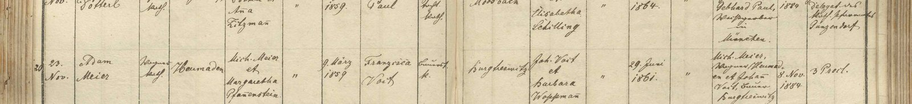
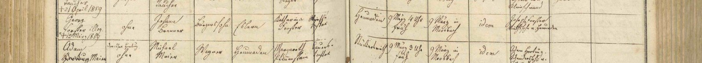
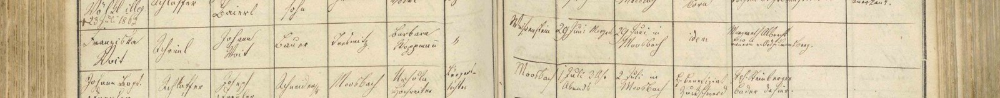

Teil VI · Winter in Bayern
Kapitel 18 — Die Straße nach Heumaden und die Kurrentschrift von Moosbach
49,6° N · 12,4° E, Moosbach, Oberpfalz (Heumaden, Rückersrieth, Burgtreswitz)
Die Tinte eines Dorfpfarrers hält länger als das Dorf, das er kannte.
Eine Seite aus einem bayerischen Pfarrbuch widerspricht, so wie ich sie lese, dem, was die Familie über die Taufe der Mota aufgeschrieben hat: dem Tag und dem Namen der Patin. Eine andere trägt einen Familiennamen, der nachträglich ausgebessert zu sein scheint. Dieses Kapitel handelt von vier Seiten.
Eine Straße, die man zuerst auf der Karte abfährt
Heumaden liegt in Luftlinie etwa fünfzig Kilometer nordöstlich von Maxhütte-Haidhof, fast auf demselben Längengrad, ein Stück näher an der tschechischen Grenze. Es ist eines jener Dörfer, die auf der Landkarte in ein Komma passen: eine Handvoll Dächer, eine Nebenstraße, Felder ringsum, dunkle Flecken Wald. Heute gehört es zum Markt Moosbach im Landkreis Neustadt an der Waldnaab in der Oberpfalz. Die Pfarrei ist St. Peter und Paul in der Mitte von Moosbach. Ringsum, nur wenige Kilometer voneinander entfernt, liegen die übrigen Namen dieser Geschichte: Rückersrieth, wo euer Ururgroßvater Georg Adam Meier geboren wurde, und Burgtreswitz, wo eure Ururgroßmutter Franziska Voit geboren wurde, ein Dorf, das die Burg im Namen trägt, weil es tatsächlich eine hat.
Das erste Mal bin ich diese Straße auf der Karte gefahren, und so möchte ich auch beginnen, denn wahrscheinlich werdet ihr sie ebenso fahren. Ich öffnete das Satellitenbild und zoomte langsam heran. Erst Europa, dann Deutschland, dann Bayern, dann jene Gegend mit niedrigen Hügeln und Wäldern zwischen Donau und Böhmen, der Oberpfälzer Wald. Dann Moosbach mit seiner Kirche. Dann, im Nordosten, Heumaden. Ein paar Häuser, eine Straße, Felder in langen Streifen, das alte Erbe der mittelalterlichen Flurordnung. Lange habe ich auf diese Streifen geschaut. Auf einem davon hat die Mota vielleicht als junges Mädchen Kühe gemolken, bevor sie heiratete und fortging. Im Text zur Hundertjahrfeier heißt es, Maria habe „für Lohn Kühe gemolken”. Sie sei es gewesen, schreibt Marise, „die sich mit der Feldarbeit auskannte”.
Schon der Name des Dorfes scheint vom Land zu sprechen. Heu ist Heu, Mahd ist das Mähen des Grases mit der Sense. Ich bin kein Sprachwissenschaftler und will auf diese Herkunft nicht schwören, aber es fällt schwer, in Heumaden nicht so etwas wie „die Heuwiesen” zu hören, „den Ort, an dem gemäht wird”. Ein Dorf der Weiden und der Kühe. Es passt, dass die Mota mit dem Melken aufwuchs. Und es passt auch, was mir erst später auffiel, dass sie ihr Alter in Ribeirão das Pacas im Alto Vale do Itajaí verbrachte, mit Tieren und Äckern beschäftigt, auf die Holzstöcke gestützt, an die sich die Enkel erinnern. In Marises Text steht, dass sie in der Nähe ihrer Tochter Maria weiter „den Boden umgrub, ihre Pflanzen zog und ihre Tiere hielt”.
Für einen Meteorologen hat diese Gegend noch ein weiteres Merkmal: Sie liegt auf der Innenseite des Kontinents. Weit vom Meer entfernt hat die Oberpfalz kältere Winter und heißere Sommer als der Westen Deutschlands, und der Wind aus dem Osten, aus Böhmen, kommt trocken und schneidend an. Die Alten hatten einen Namen für ihn. Die Mota wuchs in diesem Klima großer Gegensätze auf, mit langem Frost und kurzem Sommer, und landete an einem Ort, wo die Feuchtigkeit nie nachlässt und der Winter eine Jahreszeit von wenigen Wochen ist. Ich weiß nicht, was ihr Körper von diesem Tausch hielt. Ich weiß, dass sie fünfundachtzig Jahre alt wurde.
Die Pfarrbücher von Moosbach liegen heute im Bischöflichen Zentralarchiv Regensburg. Sie wurden digitalisiert und sind über das Portal Matricula für jeden zugänglich, das Kirchenbücher aus halb Europa zusammenführt. Nach diesen Digitalisaten zitiere ich die Seiten (das Taufbuch von 1847 bis 1904, das Trauungsbuch von 1853 bis 1935), denn mit ihnen könnt ihr, oder jeder Vetter und jede Base, jede Zeile nachprüfen, die ich hier abschreibe. Gleich in welchem Raum, an welchem Tisch oder vor welchem Bildschirm man ein solches Buch aufschlägt, die Erfahrung ist dieselbe: eine alte Seite, eine Schrift, die man nicht versteht, und die Hoffnung, irgendwo darin einen bekannten Namen zu finden.
Die Schrift, die die Mota lesen konnte
Das Erste, was ein Brasilianer vor einem bayerischen Pfarrbuch des 19. Jahrhunderts entdeckt, ist, dass er nicht lesen kann.
Das Problem ist die Schrift. Die Pfarrer und Schreiber jener Zeit schrieben in Kurrentschrift, der deutschen Schreibschrift, die jahrhundertelang die gewöhnliche Handschrift im deutschen Sprachraum war, bis man sie Mitte des 20. Jahrhunderts aufgab. Sie ähnelt nichts, was wir in der Schule gelernt haben. Das „e” besteht aus zwei fast gleichen senkrechten Strichen, wie ein zusammengedrücktes „n”. Das „h” hängt wie ein Schwanz unter die Zeile. Das „s” hat zwei Formen, eine lange in der Wortmitte und eine runde am Ende. Das „r” sieht aus wie ein kleines „w”. Das große „M”, das ich vor allem anderen finden musste, weil es der Anfangsbuchstabe von Meier war, ist eine Folge von Bögen, die auf den ersten Blick alles Mögliche sein könnte.
Die Mota konnte diese Schrift lesen. Der Fata auch. Sie hatten in den bayerischen Schulen so schreiben gelernt, und der Text zur Hundertjahrfeier erzählt, dass sie Leser waren, dass sie Bücher aus Deutschland mitbrachten und später Zeitungen aus Blumenau bezogen, die zu Beginn des 20. Jahrhunderts noch in Fraktur gedruckt wurden. Ihre Kinder, in Brasilien geboren, kamen in die Schule und sprachen nur Deutsch, lernten aber im lateinischen Alphabet zu schreiben, auf Portugiesisch. Ich, der Enkel, brauchte Tabellen, Beispiele und viel Geduld, um den Namen meiner Großmutter auf einer Seite zu erkennen, die in genau der Schrift geschrieben war, in der sie selbst ihre Briefe schrieb. Das ist eine der greifbarsten Formen der zum Schweigen gebrachten Sprache, von der ich in Kapitel 7 erzählt habe: Verloren ging die Sprache, und verloren ging die Hand.
Ich lernte langsam. Zuerst die einzelnen Buchstaben, dann die Abkürzungen. Die Pfarrer kürzten alles ab: Gg. für Georg, Kath. für Katharina, Mich. für Michael, Joh. für Johann, k. oder kath. für katholisch. Sie setzten Anführungszeichen als Wiederholungszeichen für das, was in der Zeile darüber stand. Sie mischten Latein ins Deutsche: et für „und”, Procl. für die kirchlichen Proklamationen, idem für denselben Pfarrer. Und sie schrieben die Zahlen auf eine Weise, die einem Meteorologen, der ans Lesen von Tabellen gewöhnt ist, fast vertraut vorkam.
Die Taufbücher von Moosbach sind Tabellen. Jede Zeile ist ein Kind. Die Spalten enthalten von links nach rechts die Nummer des Eintrags, den Namen des Kindes, die Hebamme, den Vater und seinen Stand, den Wohnort, die Mutter und ihren Stand, die Herkunft der Mutter, Tag und Stunde der Geburt, den Tauftag, den Pfarrer, die Paten. Jede Doppelseite enthält nur wenige Einträge, jedes Jahr einige Dutzend. Um Maria Meier zu finden, kannte ich Jahr und Monat. April 1888. Ich musste nur bis dorthin blättern.
Seite 441, Eintrag Nr. 36
Da stand sie.
Auf Seite 441 des Taufbuchs, zwischen einem Mädchen namens Josefa aus einer Moosbacher Familie, am Tag zuvor geboren, und einem Jungen namens Bergmann, am selben Tag wie sie geboren: der Eintrag Nummer 36. In der Namensspalte, auf zwei Zeilen, zuerst der Familienname, wie es damals üblich war: Meier, dann Maria.
Ich lese die Zeile mit euch, Spalte für Spalte, so wie ich sie gelesen habe.
Hebamme: zwei kleine Gänsefüßchen. Idem. Um zu erfahren, wer es war, muss man eine Zeile höher gehen, zum Eintrag 35, dem der kleinen Josefa, geboren am 6. April um ein Uhr nachts. Dort steht der Name: Glas. Frau Glas, Hebamme in Moosbach, hatte in der Nacht zum 6. April eine Geburt begleitet und in der Nacht zum 7. die nächste. Zwei Nächte hintereinander mit ihrer Tasche durch die Kälte des bayerischen Frühlings. Als ich mir in Kapitel 4 die Nacht vorstellte, in der die Mota geboren wurde, hatte ich die beiden Gänsefüßchen noch nicht bemerkt. Jetzt weiß ich, dass Frau Glas in jener Nacht wahrscheinlich müde war.
Vater: Gg. Adam Meier. Stand, nach unserer Lesung, die mit den Transkriptionen im Dossier übereinstimmt: Ökonom, was im damaligen Bayern einen Landwirt bezeichnete. Wohnort: Heumaden. Mutter: Franzisca Voit. Herkunft der Mutter: Burgtresw., Burgtreswitz.
Geburt: 7. April, 2 h. morg.
Taufe: 7. April.
Patin: Kath. Reichenberger, Bäuerin v. Burgtresw.
Archivkarte: Pfarrei St. Peter und Paul, Moosbach (Dekanat Leuchtenberg, Bistum Regensburg). Taufbuch 1847–1904 (Matricula: Moosbach_Leuchtenberg005), S. 441, Eintrag Nr. 36. Täufling: Maria Meier. Hebamme: Glas (durch „idem” angegeben, mit Verweis auf den vorhergehenden Eintrag). Vater: Georg Adam Meier (Gg. Adam Meier), Ökonom in Heumaden. Mutter: Franziska Voit (Franzisca Voit), gebürtig aus Burgtreswitz. Geburt: 7. April 1888, 2 Uhr morgens, in Heumaden. Taufe: 7. April (Datum in der eigenen Spalte eingetragen, nach unserer Lesung). Patin: Kath. Reichenberger, Bäuerin v. Burgtresw. Bild: imagens/doc1_maria_meier_1888.jpg.

Ich muss euch etwas erzählen, denn dieses Buch hat eine Regel, und ich werde sie nicht ausgerechnet in dem Kapitel brechen, in dem sie am meisten zählt.
In den Aufzeichnungen, die in der Familie kursierten und die ich selbst an mehr als einer Stelle wiederholt habe, wurde Maria am 8. April getauft, und Patin war ihre Tante Katharina Meier, Bäuerin in Heumaden. Seite 441 sagt, so wie ich sie lese, etwas anderes. Die Taufspalte nennt den „7. April”, denselben Tag wie die Geburt, was im katholischen Bayern ganz üblich war, wo man rasch taufte, aus Angst, das Kind könnte ungetauft sterben. Und die Patin heißt Katharina Reichenberger, aus Burgtreswitz, dem Dorf der Mutter.
Es gibt eine Vermutung, die beide Fassungen versöhnt, und ich halte sie als Vermutung fest: Eine Katharina, geborene Meier, Schwester von Georg Adam, könnte mit einem Reichenberger aus Burgtreswitz verheiratet gewesen sein; dann wäre sie zugleich „die Tante Katharina” der Überlieferung und die „Kath. Reichenberger” des Buches. Das wäre schön. Aber ich habe kein Dokument, das es beweist, und eine schöne Vermutung ist genau die Art von Dingen, der ein Forscher am meisten misstrauen sollte. Ich lasse beide Fassungen nebeneinander stehen, so wie ich in den früheren Kapiteln die beiden Daten von Gertrudes und die beiden Grabstätten von Luisa und Walter nebeneinander stehen ließ. Die Wahrheit über die Patin der Mota steht in irgendeinem anderen Buch, in einem Trauungseintrag aus Burgtreswitz, den ich noch nicht gelesen habe. Der bleibt euch, wenn ihr wollt.
Keiner dieser Zweifel nimmt dem Wesentlichen etwas. Am 7. April 1888 um zwei Uhr nachts wurde in einem Haus in Heumaden das Mädchen geboren, das die Mota werden sollte. Der Name, den die Familie ein Jahrhundert lang in Ituporanga und in Aurora wiederholt hatte, ohne dass jemand genau wusste, wo dieser Ort lag, hatte eine Zeile in einem Buch.
Ich erlaube mir noch einmal, mir etwas vorzustellen.
Moosbach, Oberpfalz, 7. April 1888. Es ist ein Samstag. Frau Glas hat das Haus der Meiers noch vor Tagesanbruch verlassen. Später trägt jemand das Neugeborene zur Kirche St. Peter und Paul, in Tücher gewickelt gegen die Aprilkälte. Wahrscheinlich geht die Mutter, Franziska, nicht mit; Frauen, die gerade entbunden hatten, blieben zu Hause. Es gehen der Vater, die Patin, vielleicht eine Nachbarin. Der Pfarrer gießt das Wasser, spricht den Namen. Danach schlägt er in der Sakristei das große Buch auf und schreibt, in der Schrift, die ich erst ein Jahrhundert später lesen lernen sollte, die Zeile Nummer 36 jenes Jahres. Niemand dort ahnt, dass dieses Mädchen am anderen Ende der Welt sterben wird, mit 85 Jahren, in einem Ort namens Aurora, ohne diese Kirche je wiederzusehen.
Der 23. November 1884
Nachdem Maria gefunden war, fügte sich der Rest des Puzzles wie von selbst. Wenn sie die Tochter von Georg Adam Meier und Franziska Voit war, mussten die beiden einige Jahre zuvor dort geheiratet haben. Das Trauungsbuch von Moosbach, das von 1853 bis 1935 reicht, enthält auf Seite 93 den Eintrag Nummer 20.
Das Datum in der ersten Spalte: 23. Nov., der 23. November 1884. Ein Sonntag.
Bräutigam: Adam Meier. Stand: Wagner, katholisch. Ein Wagner war der Handwerker, der Räder und Wagen baute, der Felgen, Speichen und Naben fertigte und ganze Fuhrwerke, mit denen man die Felder bestellte. Wohnort: Heumaden. Eltern: Mich. Meier et Margaretha Pfanenstein, mit nur einem „n” und einem kleinen Strich darüber, so wie man den Doppelbuchstaben abkürzte. Familienstand: ledig. Geboren am: 9. März 1859.
Braut: Franzisca Voit. Stand: Bauerstochter, katholisch. Wohnort: Burgtreswitz. Eltern: Joh. Voit et Barbara Woppman. Familienstand: ledig. Geboren am: 29. Juni 1861.
Trauzeugen: Mich. Meier, Wagner, Heumaden, et Johan Voit, Bauer, Burgtreswitz. Die beiden Väter. Der Vater des Bräutigams, der Räder baute, und der Vater der Braut, der den Boden bestellte, standen neben ihren Kindern vor dem Altar.
Danach das Datum der standesamtlichen Bescheinigung, 8. Nov. 1884, denn seit 1876 musste die Ehe auch vor dem Standesamt geschlossen werden, und die 3 Procl., die drei kirchlichen Aufgebote, die an drei aufeinanderfolgenden Sonntagen in der Messe verkündet wurden, damit sich melde, wer von einem Ehehindernis wusste. Niemand meldete sich.
Archivkarte: Pfarrei St. Peter und Paul, Moosbach. Trauungsbuch 1853–1935 (Matricula: Moosbach_Leuchtenberg013), S. 93, Eintrag Nr. 20. Datum: 23. November 1884. Bräutigam: Adam (Georg Adam) Meier, Wagner, katholisch, aus Heumaden, Sohn von Michael Meier und Margaretha Pfannenstein (Pfanenstein), ledig, geboren am 9. März 1859. Braut: Franziska Voit (Franzisca), Bauerstochter, katholisch, aus Burgtreswitz, Tochter von Johann Voit und Barbara Woppmann (Woppman), ledig, geboren am 29. Juni 1861. Trauzeugen: Michael Meier, Wagner in Heumaden, und Johann Voit, Bauer in Burgtreswitz. Standesamtliche Bescheinigung: 8. November 1884. Drei Aufgebote. Bild: imagens/doc2_trauung_meier_voit_1884.jpg.

Ich machte die Rechnung, die jeder Familienforscher irgendwann macht. Am 23. November 1884, während Adam und Franziska in Moosbach heirateten, schlief in Leonberg, fünfzig Kilometer entfernt, ein vier Monate altes Kind namens Johann Haas. Die Eltern des Fata und die Eltern der Mota kannten sich nicht, haben sich wahrscheinlich nie kennengelernt, und doch waren in jenem Herbst die beiden Linien schon auf der Karte gezogen.
Mir fiel auch der Wechsel des Berufs auf. 1884 ist Adam Wagner, wie sein Vater. 1888, bei Marias Taufe, ist er Ökonom. Zwischen dem einen Eintrag und dem anderen scheint der Wagner zum Leben vom Land übergegangen zu sein, vielleicht vom Land der Familie seiner Frau, vielleicht von Land, das er gekauft oder geerbt hatte. Die Einzelheiten kenne ich nicht. Der Sohn des Wagners wurde Bauer. Die Tochter des Bauern, Maria, sollte für Lohn Kühe melken. Und ihr Enkel wurde Maurer in Santa Catarina.
Zwei Taufen, eine im Winter und eine im Sommer
Es fehlten noch die beiden, die vor dem Altar gestanden hatten. Ich ging zurück ins Taufbuch, diesmal rückwärts.
Die erste steht auf Seite 96, im Jahr 1859. Die Zeile stammt von einem Mittwoch im März. Name: Adam, dann Meier. Hier hat der Eintrag eine Besonderheit, die ich erst spät verstand. Der Familienname scheint ausgebessert zu sein, als hätte vorher etwas anderes dort gestanden, das dann korrigiert wurde. Die Transkription im Dossier, das diese Dokumente zusammenstellt, deutet das als Legitimation: Adam sei vor der Heirat seiner Eltern geboren und später anerkannt worden, als Michael und Margaretha heirateten. Ich bin kein Paläograph, um das mit Gewissheit zu sagen, darum sage ich nur, was ich sehe: einen Namen, an dem jemand etwas verändert hat. Wenn die Lesung des Dossiers stimmt, begann euer Ururgroßvater Georg Adam sein Leben mit einer kleinen Unregelmäßigkeit, die die Zeit und die Heirat seiner Eltern dann in Ordnung brachten.
Der Vater: Michael Meier, Wagner, aus Heumaden. Die Mutter: Margaretha Pfannenstein, Bauerstochter. Der mit der Geburt verbundene Ort: Rückersrieth, ihr Dorf. Geburt: 9. März, 3 Uhr früh. Taufe: 9. März in Moosbach, am selben Tag. Pfarrer: idem. Und der Pate: Adam Hartung, Sohn des Schmieds von Heumaden.
Da verstand ich, woher der Name kam. In Bayern war es üblich, dass das Kind den Namen des Paten bekam. Georg Adam Meier hieß Adam wegen Adam Hartung, dem Schmiedssohn. Der Sohn eines Wagners, getauft auf den Namen eines Schmiedssohns. Im Dorf arbeiteten Schmied und Wagner zusammen: Der eine baute das hölzerne Rad, der andere schmiedete den eisernen Reifen, der es umschloss. Das ganze Rad hing von beiden ab. Ich fand das zu schön, um bloßer Zufall zu sein, und vielleicht war es das auch nicht.
Archivkarte: Pfarrei St. Peter und Paul, Moosbach. Taufbuch 1847–1904 (Moosbach_Leuchtenberg005), S. 96. Täufling: Adam (Georg Adam) Meier. Vater: Michael Meier, Wagner in Heumaden. Mutter: Margaretha Pfannenstein, Bauerstochter, aus Rückersrieth. Geburt: 9. März 1859, 3 Uhr morgens. Taufe: 9. März 1859, in Moosbach. Pate: Adam Hartung, Schmiedssohn aus Heumaden. Bemerkung: Der Familienname ist ausgebessert; das paläographische Dossier der Familie deutet dies als Legitimation durch spätere Heirat der Eltern (vom Verfasser nicht bestätigte Lesung). Bild: imagens/doc3_adam_meier_1859.jpg.

Die zweite Taufe steht auf Seite 115, zweieinhalb Jahre später, an einem Samstag im Sommer. Name: Franziska Voit. Vater: Johann Voit, Bauer, aus Treswitz, so hat der Pfarrer Burgtreswitz abgekürzt. Mutter: Barbara Woppmann. Geburt: 29. Juni, Morgens, also am Morgen des 29. Juni 1861. Diesmal ohne genaue Stunde. Taufe: am selben Tag, in Moosbach. Und der 29. Juni, achtet darauf, ist das Fest Peter und Paul: Das Mädchen wurde genau am Fest der Pfarrpatrone geboren und getauft. Ich stelle mir die geschmückte Kirche vor, das feierliche Hochamt, und mitten im Fest eine Familie aus Burgtreswitz, die mit einem wenige Stunden alten Kind ankommt.
Die Hebamme hieß laut Transkription Schmirl. Die Patin: Margaretha Albrecht, Bäuerin.
Albrecht. Ich habe es zweimal gelesen. Jahrelang glaubte ich, Albrecht sei der Familienname der Mutter von Josef Haas, jener Maria Anna Albrecht aus Stoffen, und lächelte über den Zufall. Später fand ich heraus, dass die Maria Anna aus Stoffen nie zu uns gehört hatte: Sie war die Mutter eines anderen Joseph Haas. Das Augenzwinkern der Genealogie war größer, als ich dachte. Die Namen wiederholen sich, und man muss vorsichtig mit ihnen sein.
Archivkarte: Pfarrei St. Peter und Paul, Moosbach. Taufbuch 1847–1904 (Moosbach_Leuchtenberg005), S. 115. Täufling: Franziska Voit. Vater: Johann Voit, Bauer in (Burg)Treswitz. Mutter: Barbara Woppmann (Woppman). Geburt: 29. Juni 1861, morgens (Morgens). Taufe: 29. Juni 1861, in Moosbach. Hebamme: Schmirl (laut Transkription im Dossier). Patin: Margaretha Albrecht, Bäuerin. Bild: imagens/doc4_franziska_voit_1861.jpg.

Das bayerische Puzzle
Als ich die vier Seiten zu Ende gelesen hatte, war die bayerische Hälfte eures Stammbaums bis zu den Großeltern der Mota vollständig. Ich zeichne sie euch in Worten, denn so werdet ihr sie im Gedächtnis behalten.
In Heumaden ein Wagner namens Michael Meier. In Rückersrieth eine Bauerstochter namens Margaretha Pfannenstein. Von ihnen wird in einer Märznacht des Jahres 1859 Georg Adam geboren, der den Namen des Schmiedssohns erhält.
In Burgtreswitz ein Bauer namens Johann Voit und seine Frau Barbara Woppmann. Von ihnen wird am Morgen des Patroziniums 1861 Franziska geboren.
Adam und Franziska heiraten an einem Sonntag im November 1884 in Moosbach, mit den beiden Vätern als Trauzeugen. Er baut Räder, später lebt er vom Land. Sie bekommen Kinder: Maria Katharina 1886, dann, in einer Aprilnacht 1888, Maria, die Mota. Später kommen Theresia und Michael. Nach 1892 verschwindet die Familie aus den Moosbacher Büchern und taucht achtzig Jahre später in Briefen aus Sachsen wieder auf.
Fünfzig Kilometer entfernt, in Leonberg, bekommen der Arbeiter Josef Haas, Sohn von Michael Haas und Kunigunde Stadelmann, und Franziska Dengler einen Sohn namens Johann.
Diese beiden Linien werden sich irgendwann vor 1907 treffen. Ich weiß nicht, wo und wie. Die Hochzeit war in Eibenstock, weit weg von beiden Dörfern. Vielleicht arbeitete er als Stuckateur auf einer Baustelle in der Nähe von Heumaden. Vielleicht ging sie anderswo in Stellung, wie so viele Mädchen vom Land. Vielleicht lernten sie sich auf einem Fest kennen, auf einem Markt, an einem Bahnhof. Es gibt kein Dokument. Und hier endet meine Arbeit als Forscher, und eure beginnt, wenn ihr wollt: Das Trauungsbuch von Eibenstock existiert, in irgendeinem Archiv in Sachsen, und eines Tages wird es jemand aufschlagen.
Am Ende dieses Kapitels denke ich an alles, was die Mota nicht erzählt hat. Sie lebte fünfundachtzig Jahre, sechzig davon in Brasilien, und die Enkel erinnern sich an eine Großmutter mit blauen Augen und wenigen Worten Portugiesisch, die viel umarmte. Die Namen Heumaden und Burgtreswitz, der Vater, der Wagner war, der Schmied, dessen Sohn Pate stand: Nichts davon erreichte uns durch ihre Stimme, oder es kam nur in Bruchstücken an: das immer wieder gesagte Wort Heumaden, ein Tonfall, eine Erinnerung an Kühe. Der Rest blieb in der Schrift verwahrt, die sie lesen konnte und wir nicht. Es brauchte einen Enkel, der die Kurrentschrift lernte, damit sie uns endlich erzählte, woher sie kam.
Ein letzter Punkt auf der Karte fehlte noch. Zehn Tage nach Maxhütte-Haidhof sollte ich in London auf einer Metalllinie stehen, an dem Ort, an dem die Menschheit vereinbart hat, dass alle Längengrade beginnen.
Für euch zum Entdecken
- War Katharina Reichenberger, die Patin aus Burgtreswitz, die Tante Katharina der Überlieferung, eine geborene Meier, die einen Reichenberger geheiratet hatte? Sucht den Trauungseintrag in Burgtreswitz, den ich noch nicht gelesen habe.
- Was stand vor der Ausbesserung im Familiennamen von Adam auf Seite 96? Das Bild liegt unter
imagens/doc3_adam_meier_1859.jpg. War es wirklich eine Legitimation? - Wo haben sich ein Stuckateur aus Leonberg und ein Mädchen aus Heumaden kennengelernt, und warum haben sie in Eibenstock geheiratet? Das dortige Trauungsbuch liegt in irgendeinem Archiv in Sachsen und wartet darauf, dass jemand es aufschlägt.
- Was hat die Mota, außer dem Wort Heumaden und der Erinnerung an die Kühe, den Enkeln von ihrer Heimat erzählt? Fragt die Vettern und Basen, die sie gekannt haben.